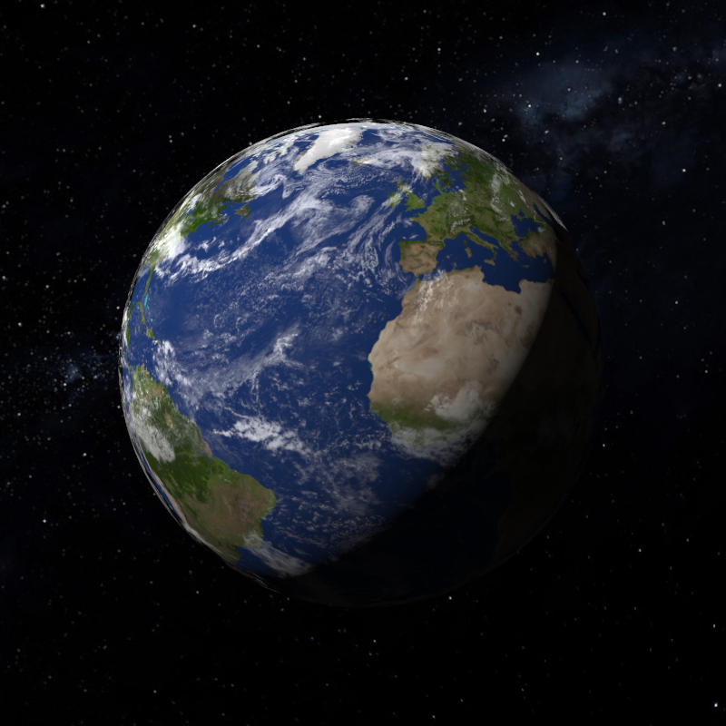
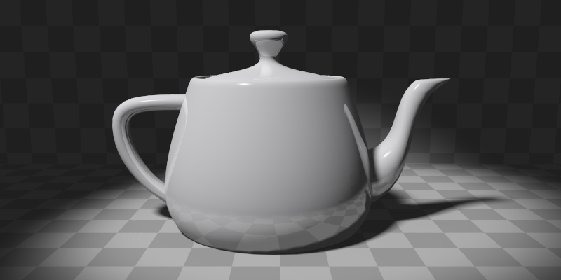
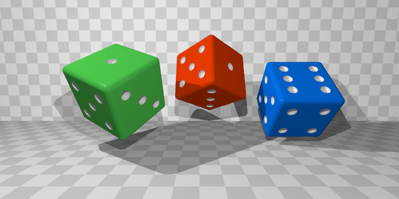
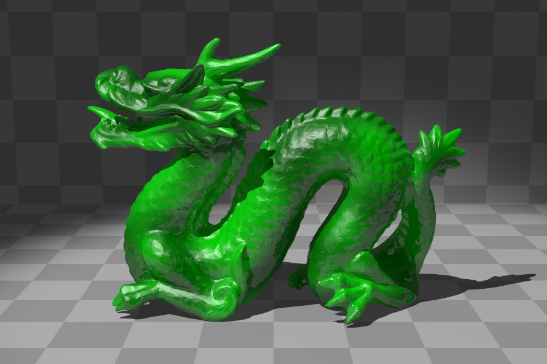

Funtracer is a simple raytracer written in Go.
Check it out on GitHub.
Here's a few of images generated with the program.
A copper casserole:
Our little rock:

The famous Utah teapot:

And some colored dice. Each dice is built with cylinders, spheres and cubes composed in various ways:

Ok, one more. I could get this only after implementing the BVH optimization.
